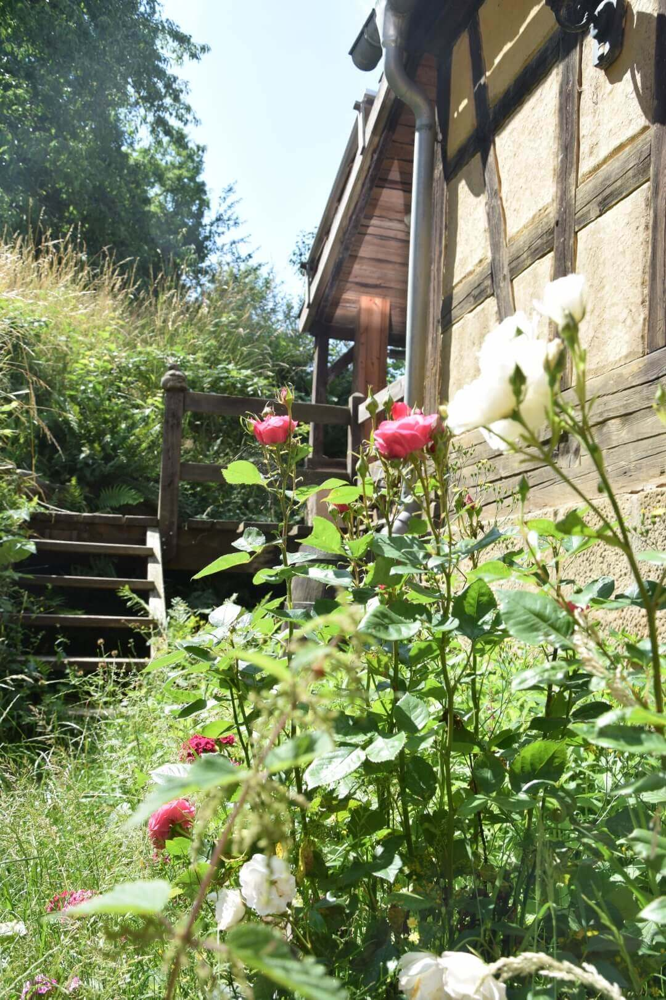
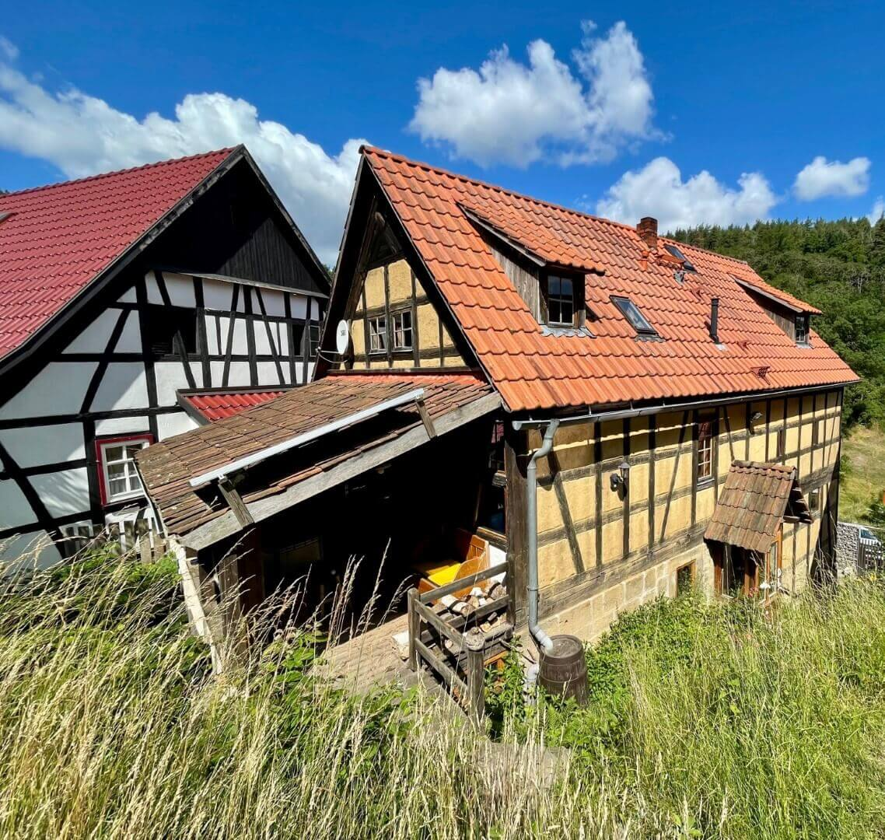
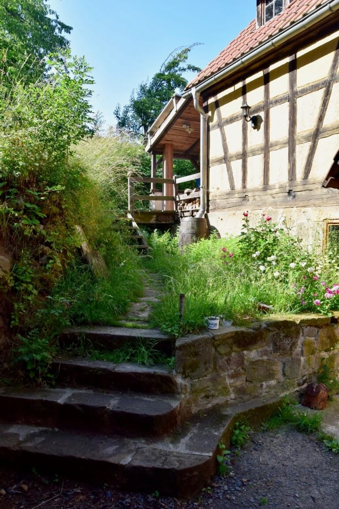
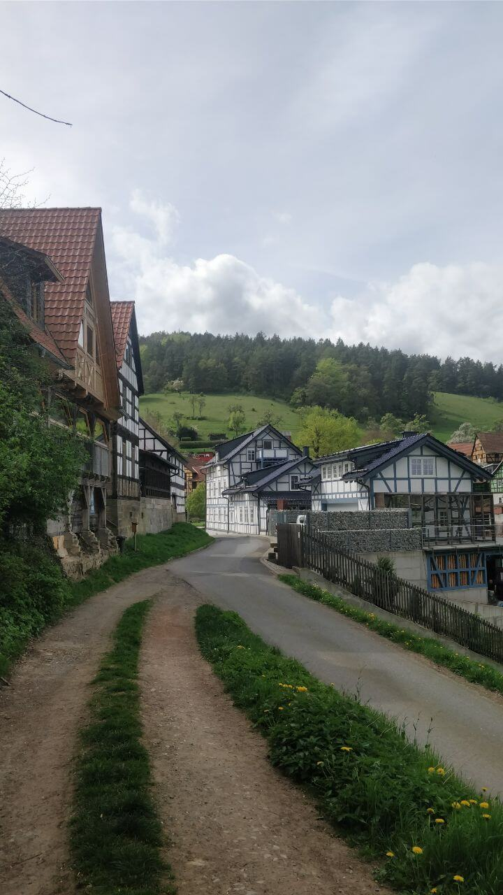
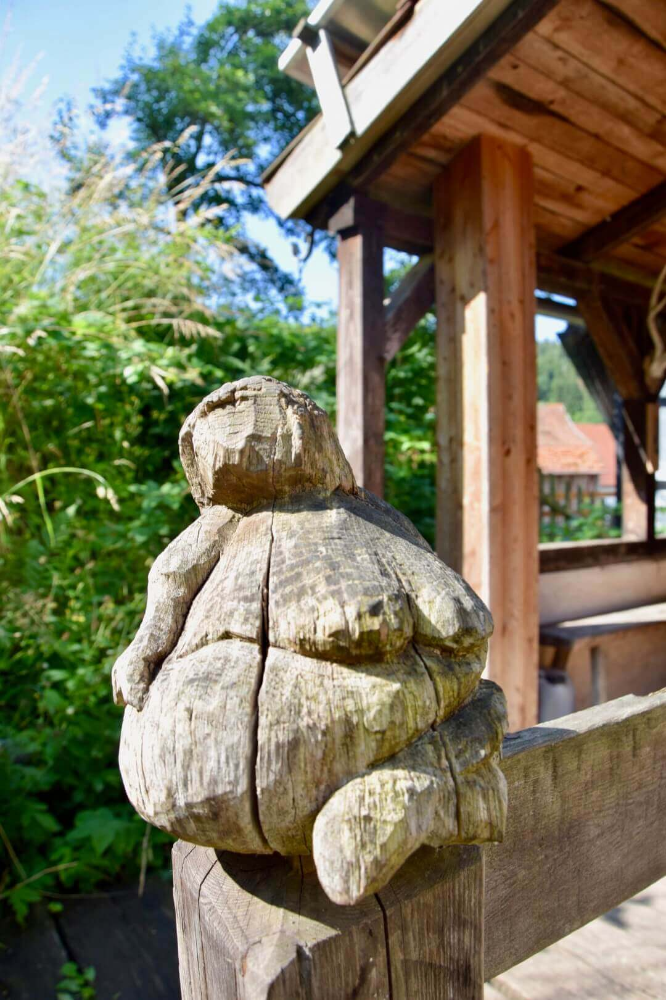
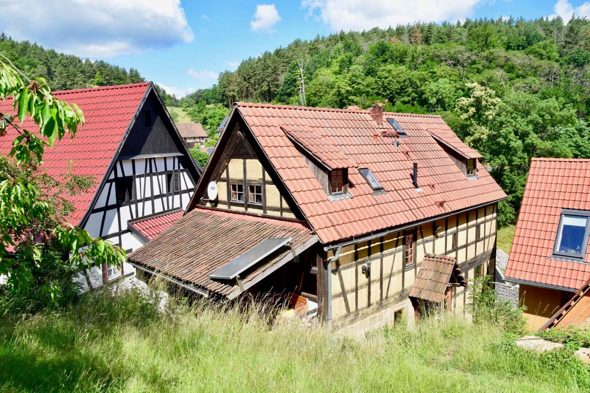
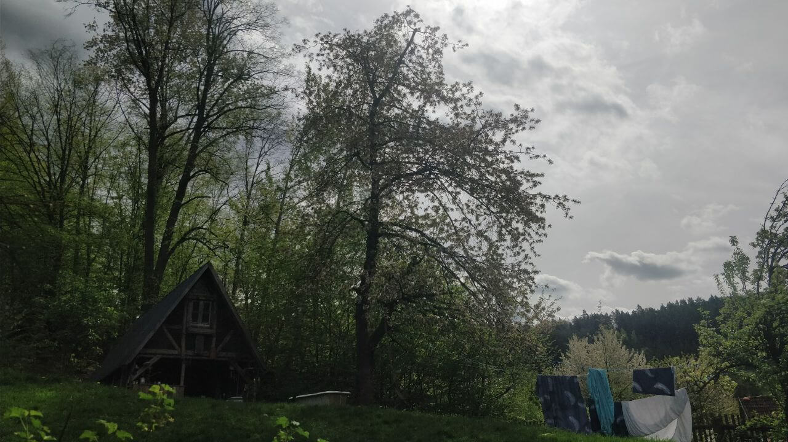
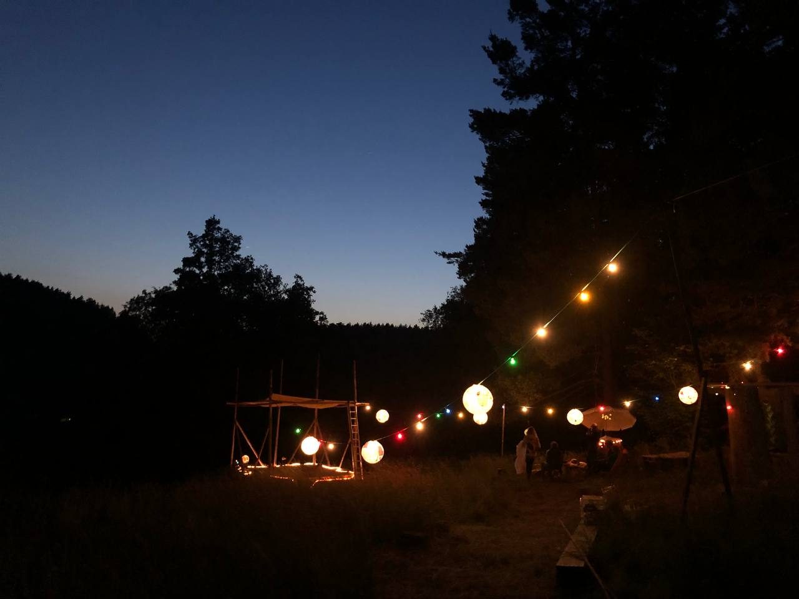
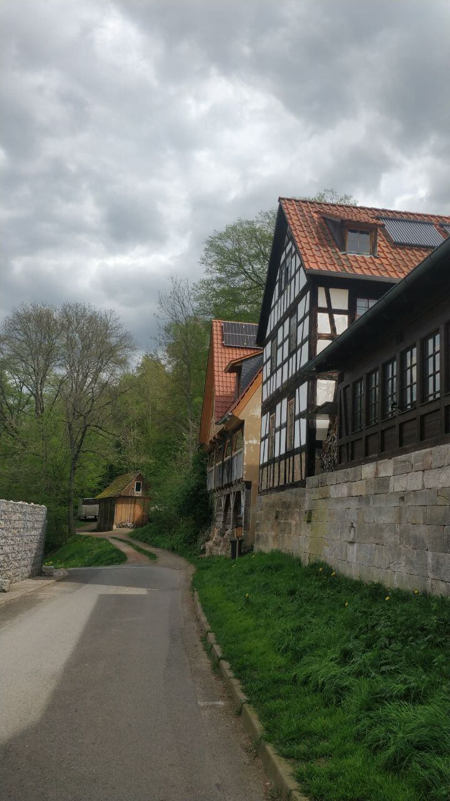

Die Treppe zum Eingang zur oberen Ferienwohnung

Altes lehmfarbenes Fachwerkhaus mit Veranda zum Garten

Lehmfarbenes Fachwerkhaus mit Treppenaufgang zur
Veranda

Blick ins Dorf mit Fachwerkhäusern

Figur auf Handlauf: bauchige Meerjungfrau aus Holz mit
Verwitterungsspuren

Altes lehmfarbenes Fachwerkhaus mit Veranda zum Garten

Blühender Kirschbaum im Garten

Wiese bei Nacht mit kleiner Bühne und leuchtenden
Lampignons

Fachwerkhäuser an Dorfstraße mit Waldweg